용접기능사 (2011-10-09 기출문제)
1과목: 용접일반
1. 초음파 탐상법에서 일반적으로 널리 사용되며 초음파의 펄스를 시험체의 한쪽 면으로부터 송신하여 그 결함에서 반사되는 반사파의 형태로 결함을 판정하는 방법은?
- 투과법
- 공진법
- 침투법
- 펄스 반사법
(정답률: 92%)

2. TIG 용접에서 아크 발생이 용이하며 전극의 소모가 적어 직류 정극성에는 좋으나 교류에는 좋지 않은 것으로 주로 강, 스테인리스강, 동합금 용접에 사용되는 전극봉은?
- 토륨 텅스텐 전극봉
- 순 텅스텐 전극봉
- 니켈 텅스텐 전극봉
- 지르코늄 텅스텐 전극봉
(정답률: 63%)
3. 주물 제품을 용접한 후 용접에 의한 잔류 응력을 최소화하기 위한 조치 방법으로 틀린 것은?
- 주물을 단열재로 덮는다.
- 주물을 토치로 후열처리 한다.
- 주물을 로(爐)에 옮긴다.
- 주물을 급랭시켜 조직을 완화시킨다.
(정답률: 61%)
4. 물체와의 가벼운 충돌 또는 부딪침으로 인하여 생기는 손상으로 충격을 받은 부위가 부어 오르고 통증이 발생되며 일반적으로 피부 표면에 창상이 없는 상처를 뜻하는 것은?
- 찰과상
- 타박상
- 화상
- 출혈
(정답률: 88%)
5. 다음 용접법 중 저항 용접이 아닌 것은?
- 스폿 용접
- 심 용접
- 프로젝션 용접
- 스터드 용접
(정답률: 64%)
6. 다음 중 서브머지드 아크 용접을 다른 명칭으로 불리우는 것에 속하지 않는 것은?
- 잠호 용접
- 유니언 멜트 용접
- 불가시 아크 용접
- 헬리 아크 용접
(정답률: 60%)
7. 용접부 검사방법에서 비드의 모양, 언더컷 및 오버랩, 표면 균열 등을 검사하는 것은?
- 침투 검사
- 누수 검사
- 외관 검사
- 형광 검사
(정답률: 87%)
8. 아래 그림과 같이 용접 길이를 짧게 나누어 간격을 두면서 용접하는 방법은?
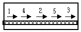
- 전진법
- 후진법
- 대칭법
- 스킵법
(정답률: 87%)
9. TIG 용접의 단점에 해당되지 않는 것은?
- 불활성 가스와 TIG 용접기의 가격이 비싸 운영비와 설치비가 많이 소요된다.
- 바람의 영향으로 용접부 보호 작용이 방해가 되므로 방풍대책이 필요하다.
- 후판 용접에서는 다른 아크 용접에 비해 능률이 떨어진다.
- 모든 용접 자세가 불가능하며 박판 용접에 비효율적이다.
(정답률: 70%)
10. 이산화탄소 가스 아크 용접에 대한 설명으로 틀린 것은?
- 비용극식 용접 방법이다.
- 가시 아크이므로 시공이 편리하다.
- 전류 밀도가 높아 용입이 깊다.
- 용제를 사용하지 않아 슬래그 혼입이 없다.
(정답률: 40%)
11. 두꺼운 판의 양쪽에 수냉동판을 대고 용융 슬래그 속에서 아크를 발생시킨 후 용융 슬래그의 전기 저항열을 이용하여 용접하는 방법은?
- 서브머지드 아크 용접
- 불활성 가스 아크 용접
- 일랙트로 슬래그 용접
- 전자 빔 용접
(정답률: 74%)
12. 자동 제어의 종류 중 미리 정해 놓은 순서에 따라 제어의 각 단계를 차례로 행하는 제어는?
- 시퀀스 제어
- 피드백 제어
- 동작 제어
- 인터록 제어
(정답률: 68%)
13. 용접 작업시 주의 사항을 설명한 것으로 틀린 것은?
- 화재를 진화하기 위하여 방화 설비를 설치할 것
- 용접 작업 부근에 점화원을 두지 않도록 할 것
- 배관 및 기기에서 가스 누출이 되지 않도록 할 것
- 가연성 가스는 항상 옆으로 뉘어서 보관할 것
(정답률: 84%)
14. 모재의 열 변형이 거의 없으며 이종 금속의 용접이 가능하고 정밀한 용접을 할 수 있으며 비접촉식 방식으로 모재에 손상을 주지 않는 용접은?
- 레이저 용접
- 테르밋 용접
- 스터드 용접
- 플라스마 제트 아크 용접
(정답률: 62%)
15. 용접 이음부에 예열하는 목적을 설명한 것 중 맞지 않는 것은?
- 모재의 열 영향부와 용착 금속의 연화를 방지하고 경화를 증가시킨다.
- 수소의 방출을 용이하게 하여 저온 균열을 방지한다.
- 용접부의 기계적 성질을 향상시키고 경화 조직의 석출을 방지시킨다.
- 온도 분포가 완만하게 되어 열응력의 감소로 변형과 잔류 응력의 발생을 적게 한다.
(정답률: 50%)
16. MIG 용접시 와이어 송급 방식의 종류가 아닌 것은?
- 풀 방식
- 푸시 방식
- 푸시 풀 방식
- 푸시 언더 방식
(정답률: 78%)
17. 가스 메탈 아크 용접(GMAW)에서 보호 가스를 아르곤(Ar)가스와 CO2 가스 또는 산소(O2)를 소량 혼합하여 용접하는 방식을 무엇이라 하는가?
- MIG 용접
- FCA 용접
- TIG 용접
- MAG 용접
(정답률: 43%)
18. 피복 아크 용접봉으로 강판의 판 두께에 따라 맞대기 용접에 적용하는 개선 홈 형식 중 적합하지 않는 것은?
- I 형 : 판 두께 6.0mm 정도까지 적용
- V 형 : 판 두께 6.0~20mm 정도 적용
- 형 : 판 두께 50mm 까지 적용
- X형 : 판 두께 10~40mm 정도 적용
(정답률: 66%)
19. 이산화탄소 가스 아크 용접의 결함에서 아크가 불안정할 때의 원인으로 가장 거리가 먼 것은?
- 팁이 마모되어 있다.
- 와이어 송급이 불안정하다.
- 팀과 모재간 거리가 길다.
- 이음 형상이 나쁘다.
(정답률: 52%)
20. 다음 중 용접기를 설치해도 되는 장소로 가장 적합한 것은?
- 옥외의 비바람이 치는 장소
- 진동이나 충격을 받는 장소
- 유해한 부식성 가스가 존재하는 장소
- 주위 온도가 10℃ 정도인 장소
(정답률: 90%)
21. 두께가 다른 판을 맞대기 용접할 때 응력 집중이 가장 적게 발생하는 것은?
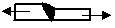
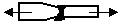
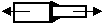
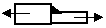
(정답률: 42%)
22. 안전모의 일반 구조에 대한 설명으로 틀린 것은?
- 안전모는 모체, 착장체 및 턱끈을 가질 것
- 착장체의 구조는 착용자의 머리 부위에 균등한 힘이 분배되도록 할 것
- 안전모의 내부 수직 거리는 25mm 이상 50mm 미만일 것
- 착장체의 미리 고정대는 착용자의 머리 부위에 고정하도록 조절할 수 없을 것
(정답률: 84%)
23. 피복제 중에 석회석이나 형석을 주성분으로 한 피복제를 사용한 것으로서 용착 금속 중의 수소량이 다른 용접봉에 비해서 1/10 정도로 적은 용접봉은?
- E4301
- E4311
- E4316
- E4327
(정답률: 73%)
24. 헬멧이나 핸드 실드의 차광 유리 앞에 보호 유리를 끼우는 가장 타당한 이유는?
- 시력을 보호하기 위하여
- 가시 광선을 차단하기 위하여
- 적외선을 차단하기 위하여
- 차광 유리를 보호하기 위하여
(정답률: 80%)
25. 아크 전류가 200A, 아크 전압이 25V, 용접 속도가 15cm/min인 경우 용접 길이 1cm 당 발생하는 전기적 에너지는?
- 10000(J/cm)
- 15000(J/cm)
- 20000(J/cm)
- 25000)J/cm)
(정답률: 44%)
26. 가스 절단시 양호한 절단면을 얻기 위한 조건이 아닌 것은?
- 드래그가 가능한 작을 것
- 절단면이 충분히 평활할 것
- 슬래그의 이탈이 양호할 것
- 드래그의 홈이 높고 노치가 있을 것
(정답률: 79%)
27. 용접의 장점 중 맞는 것은?
- 저온 취성이 생길 우려가 많다.
- 재질의 변형 및 잔류 응력이 존재한다.
- 용접사의 기량에 따라 용접 결과가 좌우된다.
- 기밀, 수밀, 유밀성이 우수하다.
(정답률: 77%)
28. 용접법 중 융접법에 속하지 않는 것은?
- 스터드 용접
- 산소 아세틸렌 용접
- 일렉트로 슬래그 용접
- 초음파 용접
(정답률: 67%)
29. 산소-아세틸렌 가스 불꽃의 종류 중 불꽃 온도가 가장 높은 것은?
- 탄화 불꽃
- 중성 불꽃
- 산화 불꽃
- 아세틸렌 불꽃
(정답률: 43%)
30. 가포화 리액터형 교류 아크 용접기의 설명으로 잘못된 것은?
- 미세한 전류 조정이 가능하여 가장 많이 사용된다.
- 조작이 간단하고 원격 제어가 된다.
- 가변 저항의 변화로 용접 전류를 조절한다.
- 전기적 전류 조정으로 소음이 거의 없다.
(정답률: 42%)
31. 가스 용접시 토치의 팁이 막혔을 때 조치 방법으로 가장 올바른 것은?
- 팁 클리너를 사용한다.
- 내화 벽돌 위에 가볍게 문지른다.
- 철판 위에 가볍게 문지른다.
- 줄칼로 부착물을 제거한다.
(정답률: 82%)
32. 35℃에서 150kgf/cm2으로 압축하여 내부용적 45.7리터의 산소 용기에 충전하였을 때 용기 속의 산소량은 몇 리터인가?
- 6855
- 5250
- 61⑤
- 70⑤
(정답률: 58%)
33. 산소 아크 절단을 올바르게 설명한 것은?
- 아크플라스마의 성질을 이용한 절단법
- 속이 빈 피복 용접봉과 모재 사이에 아크를 발생시켜 절단하는 방법
- 강관을 사용하여 절단 산소를 보내서 절단하는 방법
- 금속 전극에 큰 전류를 흐르게 하여 절단하는 방법
(정답률: 53%)
34. 아세틸렌 가스의 성질에 대한 설명으로 틀린 것은?
- 15℃, 1kgf/cm2에서의 아세틸렌 1L의 무게는 1.176g으로 산소보다 무겁다.
- 산소와 적당히 혼합하여 연소시키면 3000~3500℃의 높은 열을 낸다.
- 아세틸렌 가스는 산소와 혼합되면 폭발성이 증가된다.
- 각종 액체에 잘 용해되며 아세톤에 25배가 용해된다.
(정답률: 52%)
35. 산소-아세틸렌 가스 절단에 비교한 산소-프로판 가스 절단의 특징을 설명한 것으로 옳지 않은 것은?
- 점화하기 쉽다.
- 절단면이 미세하여 깨끗하다.
- 후판 절단시 속도가 빠르다.
- 포갬 절단 속도가 빠르다.
(정답률: 30%)
2과목: 용접재료
36. 텅스텐 아크 절단은 특수한 TIG 절단 토치를 사용한 절단법이다. 주로 사용되는 작동 가스는?
- Ar + C2H2
- Ar + H2
- Ar + O2
- Ar + CO2
(정답률: 37%)
37. 직류 아크 용접기의 종류가 아닌 것은?
- 엔진 구동형
- 전동 발전형
- 정류기형
- 가동 철심형
(정답률: 52%)
38. 연강용 가스 용접봉에서 “625 ± 25℃에서 1시간 동안 응력을 제거했다“ 는 영문자 표시에 해당되는 것은?
- NSR
- GB
- SR
- GA
(정답률: 55%)
39. 가스 용접시 용접부의 시공 상태에 대한 설명으로 틀린 것은?
- 용접부에는 노치 부분이 있어야 양호한 용접성을 얻을 수 있다.
- 용접부에는 기름, 먼지, 녹 등을 완전히 제거하여야 한다.
- 용접부에는 청결을 유지해야 한다.
- 용접부의 개선 면이 일직선으로 정교해야 한다.
(정답률: 77%)
40. 스테인리스강 중에서 내식성이 가장 높고 비자성인 것은?
- 페라이트계
- 시멘타이트계
- 마텐자이트계
- 오스테나이트계
(정답률: 52%)
41. 열전도율이 가장 큰 것부터 작은 것의 순으로 옳게 나열한 것은?
- Cu→Al→Ag→Au
- Ag→Cu→Au→Al
- Cu→Ag→Al→Au
- Ag→Cu→Al→Au
(정답률: 54%)
42. 구상흑연 주철의 조직에 따른 분류가 아닌 것은?
- 페라이트형
- 펄라이트형
- 시멘타이트형
- 트루스타이트형
(정답률: 62%)
43. 금속 표면에 알루미늄을 침투시켜 내식성을 증가시키는 것은?
- 칼로라이징
- 크로마이징
- 세라다이징
- 실리코라이징
(정답률: 62%)
44. 침입형 고용체에 용해되는 원소가 아닌 것은?
- B(붕소)
- C(탄소)
- N(질소)
- F(불소)
(정답률: 65%)
45. 구리에 3~4% Ni, dir 1%의 Si가 함유된 합금으로 인장 강도와 도전율이 높아 통신선, 전화선으로 사용되는 구리-니켈-규소 합금은?
- 콜슨(corson) 합금
- 켈밋(kelmit) 합금
- 포금(gunmetal)
- CTG 합금
(정답률: 49%)
46. 주강의 성능별 분류 중 내식용 강은 어떤 원소를 첨가한 것인가?
- Cr, Ni
- Mn, V
- P, S
- W, Ti
(정답률: 64%)
47. 열처리 방법 중 강을 오스테나이트 조직의 영역으로 가열한 후 급냉하는 것은?
- 풀림(annealing)
- 담금질(quenching)
- 불림(normalizing)
- 뜨임(tempering)
(정답률: 62%)
48. 알루미늄 표면에 산화물계 피막을 만들어 부식을 방지하는 알루미늄 방식법에 속하지 않는 것은?
- 염산법
- 수산법
- 황산법
- 크롬산법
(정답률: 44%)
49. 합금강에 영향을 끼치는 주요 합금 원소가 아닌 것은?
- 흑연
- 니켈
- 크롬
- 망간
(정답률: 62%)
50. 탄소강의 Fe-C계 평형 상태도에서 탄소량이 0.86% 정도이며, γ고용체에서 α고용체와 Fe3C 동시에 석출하여 펄라이트를 생성하는 점은?
- 공정점
- 자기 변태점
- 포정점
- 공석점
(정답률: 45%)
3과목: 기계제도
51. 그림과 같은 용접 도시 기호의 명칭은?
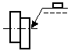
- 필릿 용접
- 플러그 용접
- 스폿 용접
- 프로젝션 용접
(정답률: 69%)
52. 도면에서 2종류 이상의 선이 같은 장소에 겹치게 될 경우에 다음 중 가장 우선되는 것은?
- 중심선
- 절단선
- 외형선
- 숨은선
(정답률: 67%)
53. 도면에 330 으로 표시된 기계 재료의 의미로 가장 적합한 설명은?
- 합금 공구강으로 최저 인장 강도는 300N/㎟
- 일반 구조용 압연강재로 최저 인장 강도는 300N/㎟
- 일반 압연 스테인리스 강관으로 탄소 함유량은 0.33%
- 압력 배관용 탄소강재로 탄소 함유량은 0.33%
(정답률: 57%)
54. 우측 그림은 평면도와 정면도가 똑같이 나타나는 물체의 평면도와 정면도이다. 우측면도로 가장 적합한 것은?
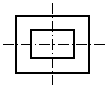
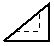
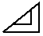
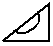
(정답률: 54%)
55. 다음 제3각 정투상도에 해당하는 입체도는?
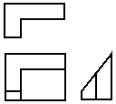
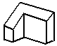
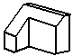
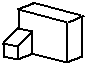
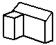
(정답률: 79%)
56. 배관 제도시 유체의 종류에 따른 기호 표기가 옳지 않은 것은?
- 공기 : A
- 연료 가스 : G
- 온수 : H
- 증기 : W
(정답률: 61%)
57. 제3각 정투상도에서 저면도의 배치 위치로 옳은 것은?
- 정면도의 아래쪽
- 정면도의 오른쪽
- 정면도의 위쪽
- 정면도의 왼쪽
(정답률: 71%)
58. 도면에서 도면 번호, 도면 명칭, 기업(소속 단체)명, 책임자 성명 등의 내용이 기입되어 있는 곳은?
- 부품란
- 표제란
- 도면의 구역
- 중심 마크
(정답률: 80%)
59. 판금 제품을 만드는데 중요한 도면으로 입체의 표면을 한 평면 위에 펼쳐서 그리는 도면은?
- 회전 평면도
- 전개도
- 보조 투상도
- 사투상도
(정답률: 80%)
60. 리벳의 종류 중 호칭 길이를 나타낼 To 머리부의 전체를 포함하여 표시하는 것은?
- 둥근머리 리벳
- 남비머리 리벳
- 얇은 납작머리 리벳
- 접시머리 리벳
(정답률: 60%)